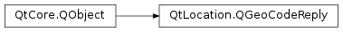

QGeoCodeReply¶
Synopsis¶
Functions¶
- def
addLocation(location) - def
error() - def
errorString() - def
isFinished() - def
limit() - def
locations() - def
offset() - def
setError(error, errorString) - def
setFinished(finished) - def
setLimit(limit) - def
setLocations(locations) - def
setOffset(offset) - def
setViewport(viewport) - def
viewport()
Detailed Description¶
The
PySide2.QtLocation.QGeoCodeReplyclass manages an operation started by an instance ofPySide2.QtLocation.QGeoCodingManager.Instances of
PySide2.QtLocation.QGeoCodeReplymanage the state and results of these operations.The
PySide2.QtLocation.QGeoCodeReply.isFinished(),PySide2.QtLocation.QGeoCodeReply.error()andPySide2.QtLocation.QGeoCodeReply.errorString()methods provide information on whether the operation has completed and if it completed successfully.The
PySide2.QtLocation.QGeoCodeReply.finished()and error(QGeoCodeReply.Error,PySide2.QtCore.QString) signals can be used to monitor the progress of the operation.It is possible that a newly created
PySide2.QtLocation.QGeoCodeReplymay be in a finished state, most commonly because an error has occurred. Since such an instance will never emit thePySide2.QtLocation.QGeoCodeReply.finished()or error(QGeoCodeReply.Error,PySide2.QtCore.QString) signals, it is important to check the result ofPySide2.QtLocation.QGeoCodeReply.isFinished()before making the connections to the signals. The documentation forPySide2.QtLocation.QGeoCodingManagerdemonstrates how this might be carried out.If the operation completes successfully the results will be able to be accessed with
PySide2.QtLocation.QGeoCodeReply.locations().
-
class
PySide2.QtLocation.QGeoCodeReply(error, errorString[, parent=nullptr])¶ -
class
PySide2.QtLocation.QGeoCodeReply([parent=nullptr]) Parameters: - errorString – unicode
- error –
PySide2.QtLocation.QGeoCodeReply.Error - parent –
PySide2.QtCore.QObject
Constructs a geocode reply with a given
erroranderrorStringand the specifiedparent.Constructs a geocode reply with the specified
parent.
-
PySide2.QtLocation.QGeoCodeReply.Error¶ Describes an error which prevented the completion of the operation.
Constant Description QGeoCodeReply.NoError No error has occurred. QGeoCodeReply.EngineNotSetError The geocoding manager that was used did not have a PySide2.QtLocation.QGeoCodingManagerEngineinstance associated with it.QGeoCodeReply.CommunicationError An error occurred while communicating with the service provider. QGeoCodeReply.ParseError The response from the service provider was in an unrecognizable format. QGeoCodeReply.UnsupportedOptionError The requested operation or one of the options for the operation are not supported by the service provider. QGeoCodeReply.CombinationError An error occurred while results where being combined from multiple sources. QGeoCodeReply.UnknownError An error occurred which does not fit into any of the other categories.
-
PySide2.QtLocation.QGeoCodeReply.abort()¶ Cancels the operation immediately.
This will do nothing if the reply is finished.
-
PySide2.QtLocation.QGeoCodeReply.aborted()¶
-
PySide2.QtLocation.QGeoCodeReply.addLocation(location)¶ Parameters: location – PySide2.QtPositioning.QGeoLocationAdds
locationto the list of locations in this reply.
-
PySide2.QtLocation.QGeoCodeReply.error()¶ Return type: PySide2.QtLocation.QGeoCodeReply.ErrorReturns the error state of this reply.
If the result is
QGeoCodeReply.NoErrorthen no error has occurred.
-
PySide2.QtLocation.QGeoCodeReply.error(error[, errorString=""]) Parameters: - error –
PySide2.QtLocation.QGeoCodeReply.Error - errorString – unicode
- error –
-
PySide2.QtLocation.QGeoCodeReply.errorString()¶ Return type: unicode Returns the textual representation of the error state of this reply.
If no error has occurred this will return an empty string. It is possible that an error occurred which has no associated textual representation, in which case this will also return an empty string.
To determine whether an error has occurred, check to see if
QGeoCodeReply.error()is equal toQGeoCodeReply.NoError.
-
PySide2.QtLocation.QGeoCodeReply.finished()¶
-
PySide2.QtLocation.QGeoCodeReply.isFinished()¶ Return type: PySide2.QtCore.boolReturn true if the operation completed successfully or encountered an error which cause the operation to come to a halt.
-
PySide2.QtLocation.QGeoCodeReply.limit()¶ Return type: PySide2.QtCore.intReturns the limit on the number of responses from each data source.
If no limit was set this function will return -1.
This may be more than
PySide2.QtLocation.QGeoCodeReply.locations(). length() if the number of responses was less than the number requested.
-
PySide2.QtLocation.QGeoCodeReply.locations()¶ Return type: Returns a list of locations.
The locations are the results of the operation corresponding to the
PySide2.QtLocation.QGeoCodingManagerfunction which created this reply.
-
PySide2.QtLocation.QGeoCodeReply.offset()¶ Return type: PySide2.QtCore.intReturns the offset into the entire result set at which to start fetching results.
-
PySide2.QtLocation.QGeoCodeReply.setError(error, errorString)¶ Parameters: - error –
PySide2.QtLocation.QGeoCodeReply.Error - errorString – unicode
Sets the error state of this reply to
errorand the textual representation of the error toerrorString.This will also cause
PySide2.QtLocation.QGeoCodeReply.error()andPySide2.QtLocation.QGeoCodeReply.finished()signals to be emitted, in that order.- error –
-
PySide2.QtLocation.QGeoCodeReply.setFinished(finished)¶ Parameters: finished – PySide2.QtCore.boolSets whether or not this reply has finished to
finished.If
finishedis true, this will cause thePySide2.QtLocation.QGeoCodeReply.finished()signal to be emitted.If the operation completed successfully,
QGeoCodeReply.setLocations()should be called before this function. If an error occurred,QGeoCodeReply.setError()should be used instead.
-
PySide2.QtLocation.QGeoCodeReply.setLimit(limit)¶ Parameters: limit – PySide2.QtCore.intSets the limit on the number of responses from each data source to
limit.If
limitis -1 then all available responses will be returned.
-
PySide2.QtLocation.QGeoCodeReply.setLocations(locations)¶ Parameters: locations – Sets the list of
locationsin the reply.
-
PySide2.QtLocation.QGeoCodeReply.setOffset(offset)¶ Parameters: offset – PySide2.QtCore.intSets the offset in the entire result set at which to start fetching result to
offset.
-
PySide2.QtLocation.QGeoCodeReply.setViewport(viewport)¶ Parameters: viewport – PySide2.QtPositioning.QGeoShapeSets the viewport which contains the results to
viewport.
-
PySide2.QtLocation.QGeoCodeReply.viewport()¶ Return type: PySide2.QtPositioning.QGeoShapeReturns the viewport which contains the results.
This function will return 0 if no viewport bias was specified in the
PySide2.QtLocation.QGeoCodingManagerfunction which created this reply.
© 2018 The Qt Company Ltd. Documentation contributions included herein are the copyrights of their respective owners. The documentation provided herein is licensed under the terms of the GNU Free Documentation License version 1.3 as published by the Free Software Foundation. Qt and respective logos are trademarks of The Qt Company Ltd. in Finland and/or other countries worldwide. All other trademarks are property of their respective owners.